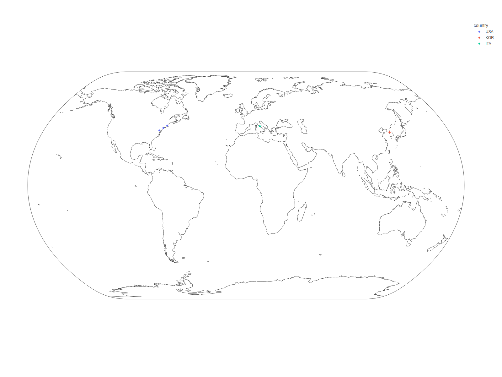
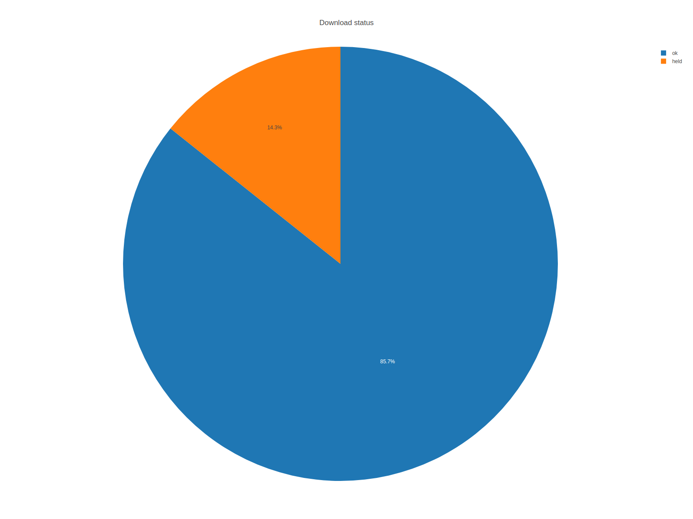
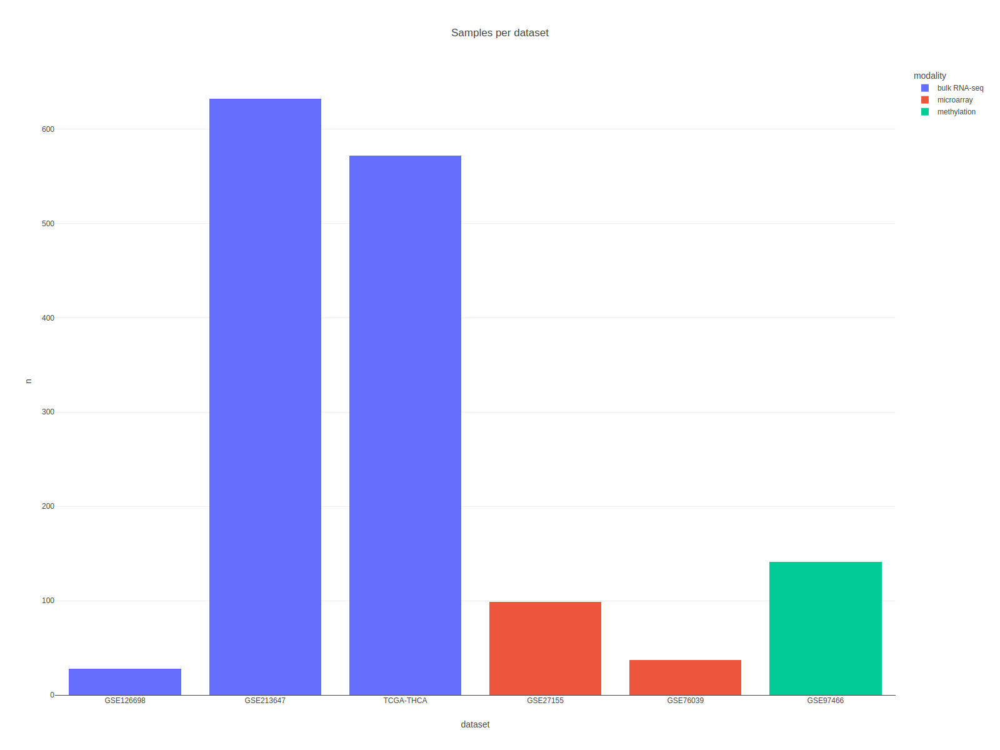
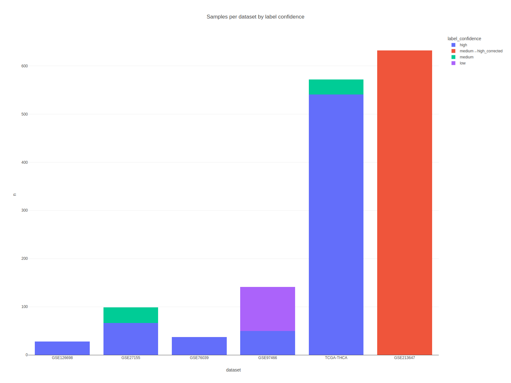
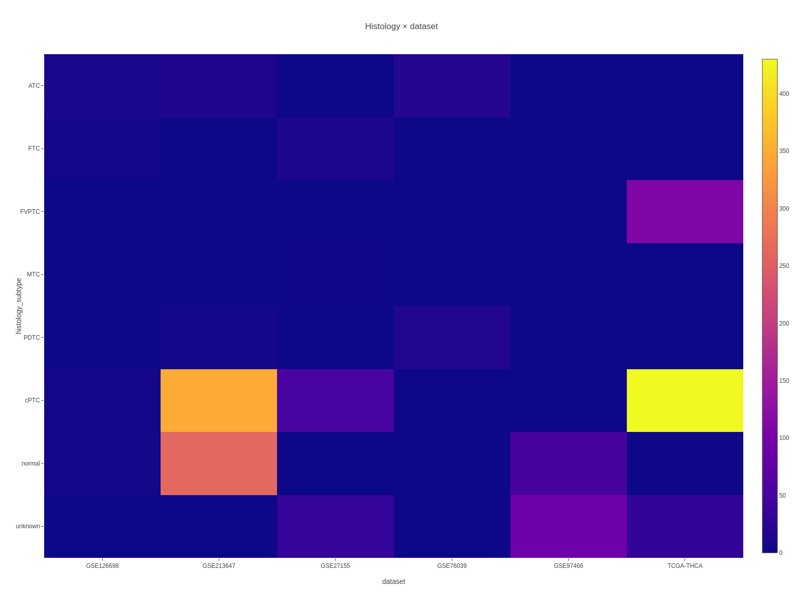

02 / DATASETS
데이터셋 탐색기 | THCA Multi-Omics Dashboard
데이터셋 메타데이터, 원천 지역, 다운로드 상태를 인터랙티브하게 확인합니다.
grid.jsMapDonut
데이터셋 요약
공개 데이터 출처와 기술 플랫폼
데이터셋 요약: TCGA와 GEO 이해하기
사용한 공개 데이터
- TCGA (The Cancer Genome Atlas): 미국 NCI/NHGRI 주도 대규모 암 유전체 프로젝트. THCA 코호트는 약 500명 PTC 환자의 RNA-seq / methylation / mutation을 제공합니다.
- GEO (Gene Expression Omnibus): NCBI가 운영하는 공개 유전자 발현 저장소. 각 연구실이 직접 업로드한 microarray·RNA-seq 데이터가 모여 있습니다.
기술 플랫폼이 뭔가
- bulk RNA-seq: 조직 전체를 갈아 mRNA를 대량 시퀀싱. 가장 정밀하지만 비쌉니다.
- microarray: 미리 설계된 probe에 hybridization. 저렴하고 오래된 방식이며 동적 범위가 좁습니다.
- methylation (450K / EPIC array): DNA의 CpG 부위 메틸화 정도를 측정. 이 대시보드에서는 QC 전용입니다.
왜 혼합하지 않나
- RNA-seq과 microarray는 값의 스케일과 noise 구조가 달라 섞어 학습하면 batch effect가 성능을 흐립니다.
bulk RNA-seq
1,232
TCGA-THCA + GEO RNA-seq
microarray
136
GSE27155 / GSE76039
methylation
141
GSE97466 exploratory
검증 등급
A:5/B:2
verification_table 기준
무엇이 확인되었나
- reported sample count와 downloaded sample count 일치 여부를 verification_table에 별도 저장했습니다.
- TCGA-THCA, GSE213647, GSE126698, GSE27155, GSE76039는 실제 분석 가능한 표현형 또는 발현 행렬을 제공했습니다.
- GSE213647는 라벨 보정은 성공했지만 현재 processed matrix의 HGNC 패널 coverage가 0이라 expression 재처리 후보입니다.
데이터셋 테이블
표 컬럼이 의미하는 것
데이터셋 테이블 읽는 법
각 컬럼 의미
sample count: 해당 데이터셋에서 실제 사용한 샘플 수 (QC 통과 기준).platform: Illumina HiSeq / Affymetrix U133 / Agilent 등 측정 장비.normal/tumor: 정상 조직 샘플과 종양 샘플 비율. 정상 비율이 너무 낮으면 배경이 되는 발현 범위를 가늠하기 어렵습니다.A/B grade: 우리가 매긴 품질 등급(메타데이터 완전성, sample size, reproducibility).
활용 팁
- 검색 박스에
TCGA,GSE,PTC등 키워드를 넣어 즉시 필터링할 수 있습니다. - 정렬 가능한 컬럼(▲/▼)은 sample size 비교에 유용합니다.
dataset_master 전체를 검색해 accession, platform, clinical availability, raw/processed file 상태를 바로 확인할 수 있습니다.
전역 뷰
데이터셋을 한 화면에 시각화
전역 뷰 그래프
이 그래프가 보여주는 것
- 각 데이터셋의 상대적 크기와 플랫폼 조합을 한눈에 비교할 수 있게 합니다.
읽을 때 주의
- bar 길이는 샘플 수이지 품질이 아닙니다. 품질은
A/B grade표기를 함께 봐야 합니다. - 정상 샘플이 거의 없는 데이터셋은 종양-정상 비교에 사용할 수 없습니다.
원천 지역과 다운로드 상태를 동시에 확인합니다. 지도는 source location proxy이고, sample bar는 modality mix를, quality grade plot은 verification_table의 cohort 신뢰도를 요약합니다.

datasets world map
페이지 안에서는 PNG preview를 기본으로 먼저 보여주고, 아래 접힘 패널에서 Plotly 인터랙티브 버전을 바로 확대해서 볼 수 있습니다.

datasets status donut
페이지 안에서는 PNG preview를 기본으로 먼저 보여주고, 아래 접힘 패널에서 Plotly 인터랙티브 버전을 바로 확대해서 볼 수 있습니다.

datasets sample bar
페이지 안에서는 PNG preview를 기본으로 먼저 보여주고, 아래 접힘 패널에서 Plotly 인터랙티브 버전을 바로 확대해서 볼 수 있습니다.
추가 데이터셋 Figure Wall
보조 그림 모음
추가 데이터셋 Figure Wall
언제 참고하나
- 메인 분석에 직접 들어가지는 않지만 각 데이터셋의 특이한 분포, 결측 패턴을 확인하고 싶을 때 봅니다.
- 각 Figure는
PNG preview → 확대 → 새 탭순으로 접근 가능합니다.
데이터셋 페이지에서도 샘플 분포와 cohort 구조를 바로 읽을 수 있도록 sample master 기반 보조 도표를 같이 배치했습니다.

sample confidence stacked
페이지 안에서는 PNG preview를 기본으로 먼저 보여주고, 아래 접힘 패널에서 Plotly 인터랙티브 버전을 바로 확대해서 볼 수 있습니다.

sample histology dataset heatmap
페이지 안에서는 PNG preview를 기본으로 먼저 보여주고, 아래 접힘 패널에서 Plotly 인터랙티브 버전을 바로 확대해서 볼 수 있습니다.